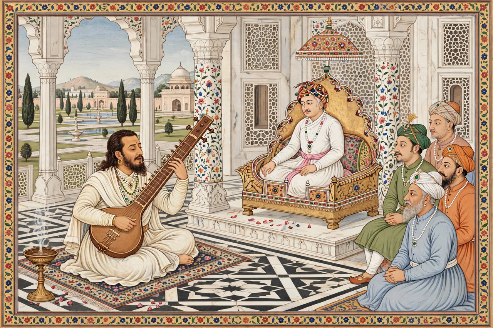

| Tansen | |
|---|---|
 | |
| Born | Ramtanu Pandey, c. 1493–1506 Gwalior |
| Died | 26 April 1589 Agra (buried at Gwalior) |
| Occupation | Musician, vocalist, composer |
| Known for | Foundational figure of Hindustani classical music; one of Akbar's Navaratnas |
Mian Tansen (c. 1493–1506 – 26 April 1589), born Ramtanu Pandey, was a legendary Indian classical musician and composer who served at the court of the Mughal emperor Akbar. He is regarded as the father of Hindustani classical music and is credited with creating or popularising many ragas still performed today.
Tansen was born near Gwalior and, by tradition, was a disciple of the Vaishnav saint Swami Haridas in Vrindavan, also receiving training connected with the Sufi Muhammad Ghaus of Gwalior. He became court musician to Raja Ramchandra Singh of Rewa, from whom Akbar famously requested — effectively demanded — that he be sent to the imperial court in 1562.
Akbar granted him the honorific "Mian" and ranked him chief among the court musicians and one of the Navaratnas. Abul Fazl wrote in the Ain-i-Akbari that "a singer like him has not been in India for the last thousand years." Ragas associated with his name include Miyan ki Todi, Miyan ki Malhar, Miyan ki Sarang, and Darbari Kanada.
Folklore credits Tansen with supernatural powers: lighting lamps with Raga Deepak, bringing rain with Raga Megh Malhar, and taming wild animals with song. His tomb stands beside that of Muhammad Ghaus in Gwalior, where the annual Tansen Music Festival is held each winter.